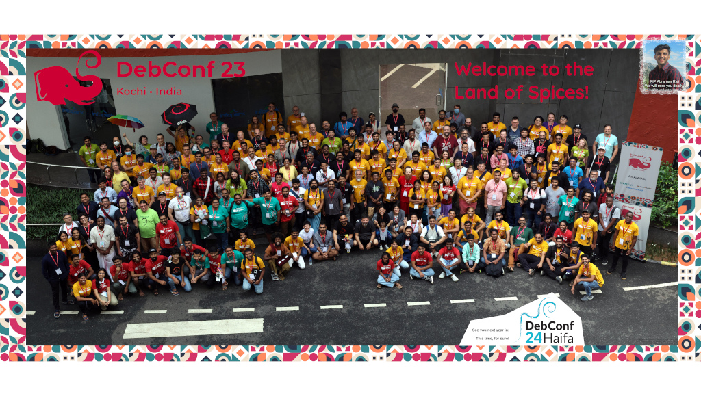

A COMUNIDADE
O Debian é uma comunidade de pessoas!
As pessoas
Quem somos e o que fazemos
A nossa filosofia
Porque fazemos e como fazemos
Envolva-se e contribua
Como pode participar!
Mais...
Informações adicionais sobre a comunidade Debian
O Sistema Operativo
O Debian é um sistema operativo livre e completo!

Porquê o Debian
O que faz o Debian especial
Suporte aos utilizadores
Obter ajuda e documentação
Atualizações de Segurança
Avisos de segurança do Debian (DSA)
Mais...
Mais links para downloads e software